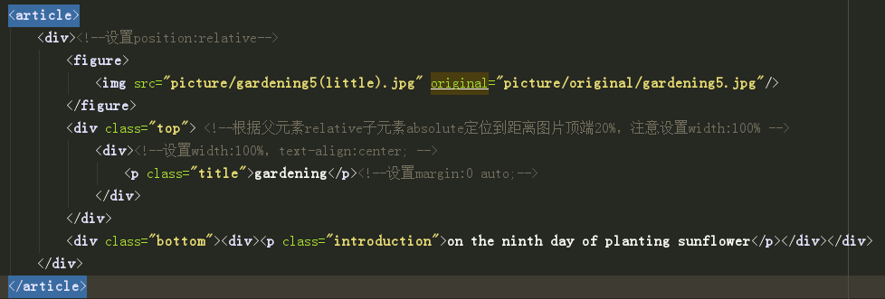
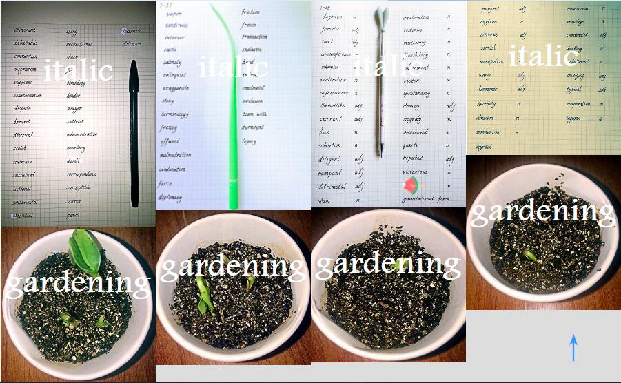

1.css3实现瀑布流多栏布局
最近发现在相册中，因为我每个图片的高度不同（宽度我强行设置了每个DIV占25%然后向左浮动）， 第二行图片，会顶着第一行高度最大那个图片的顶端，然后会和短图片之前出现很大的空隙，看起来很丑。
效果图：

很丑，对吧！gardening图集方面因为我都选择了1:1比例，所以还算整齐，但是要是和italic 放在一起，就层次不齐，特别丑陋了。
于是我上网搜了一下，发现了瀑布流布局这个神器！
由于不会后台语言，ajax也还没学，我选择了css3实现瀑布流的多栏布局
放一下部分代码
html:(图片都按照嵌套figure和div的格式放进article里就好了，下面的p是为了浮现文字)
css:
这其中大部分代码都是为了之前我写的一篇：
实现不定长度的标题和段落在不同尺寸的图片上在同一个位置水平居中（垂直可调）
有关本文的，只有：
设置最外层article的column-count:4 也就是四列布局（当然在手机中或者ipad中可以用媒体查询改成2栏）
column-gap:0 ;我使用chrome的时候，不设置这一句，有自动的列之间的间距
不要忘了给里层div宽度设置为100%或者不用设置，因为我之前为了控制4栏，
给div设置了25%的宽度，这里一定要改过来，不然就是25%中的25%宽度了

效果：
感觉挺好的！如果觉得不好看大概是我的图丑吧。。。